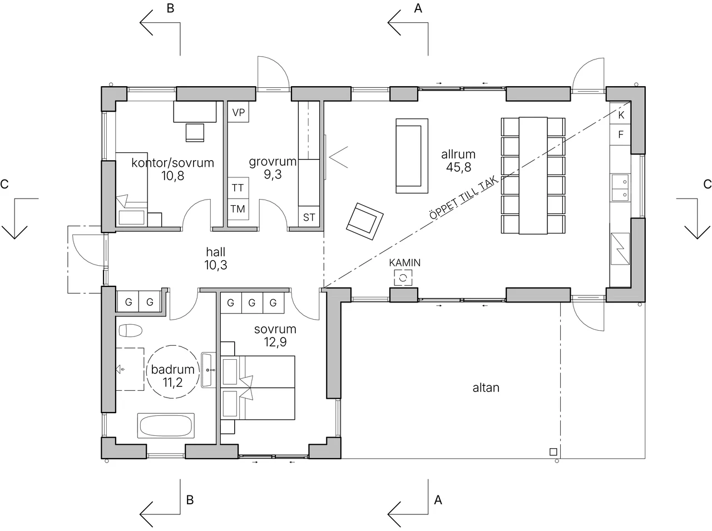
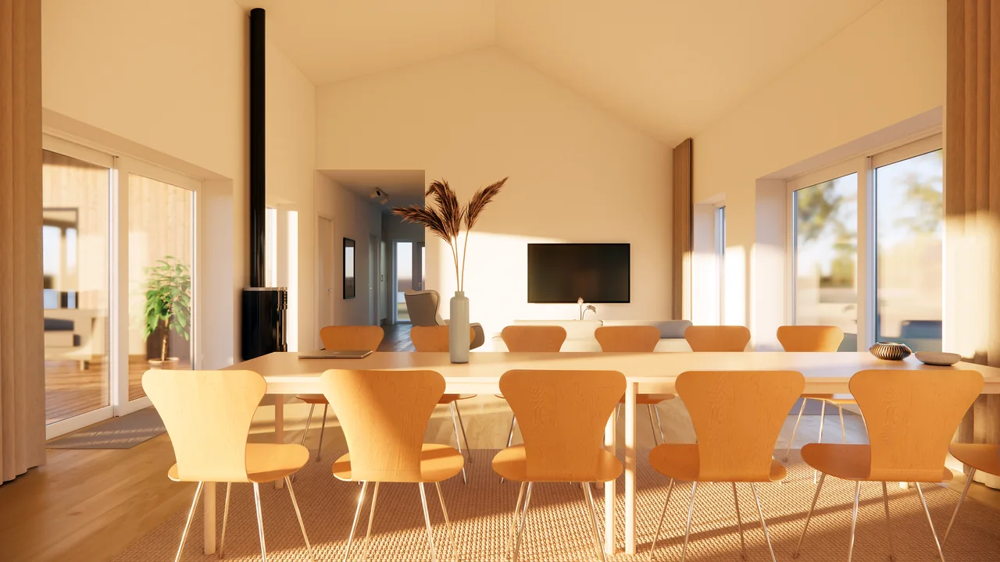

Hitta riktningen
Rådgivning och förstudie som gör möjligheterna tydligare. Vi undersöker platsen, det som redan finns och vad du vill förändra.
Rådgivning Fritidshus i Bureå · Visualisering
Fritidshus i Bureå · VisualiseringArkitektur som tar vara på platsen, ljuset och livet du vill leva. Med José Paredes, arkitekt SAR/MSA i Malmö.
Det börjar med hur du vill leva. Jag lyssnar, undersöker och ritar — tills dina idéer möter en lösning som fungerar på riktigt. Från en första tanke till planlösning, material och omsorg om detaljerna.

Norra Skåne · Villa

Bohuslän · Villa / fritidshus

Lysekils kommun · Tillbyggnad
Här visas skisser och visualiseringar ur studions projekt. På varje projektsida kan du läsa mer om förutsättningarna och uppdraget.
Vad händer när en ritning blir ett rum? Utforska planlösningen och kliv in i visualiseringen av fritidshuset i Bureå.
Se hela projektet

Planritning · Fritidshus i Bureå · Studio Paredes
Rådgivning och förstudie som gör möjligheterna tydligare. Vi undersöker platsen, det som redan finns och vad du vill förändra.
RådgivningPlanlösningar, volymer och material. Skisser och visualiseringar hjälper dig att förstå alternativen innan du väljer väg.
Skiss & gestaltningFrån bygglovsritningar till mer detaljerade handlingar. Ett genomarbetat underlag för dialogen med kommunen och dem som ska bygga.
Ritningar & projektering
José Paredes, grundare av Studio Paredes.
José Paredes · Arkitekt SAR/MSA
Jag driver Studio Paredes i Malmö. Med utbildning från Lund och över sex års erfarenhet från svenska arkitektkontor tar jag med mig både gestaltning och tekniskt kunnande in i ditt projekt.
Det personliga samarbetet är utgångspunkten. Du pratar direkt med mig — från de första frågorna till nästa steg i arbetet.
Lär känna José”José är lyhörd, vänlig och professionell och levererade snabbt.”
”Du förstod våra tankar och idéer! Vi är jättenöjda.”
Ett hus att landa i. Ett extra rum. En idé som behöver en första skiss. Berätta vad du tänker, så börjar vi där.